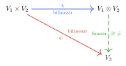
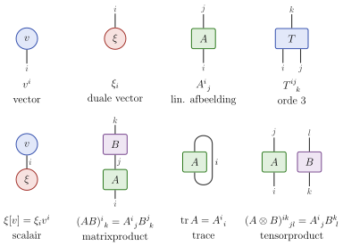
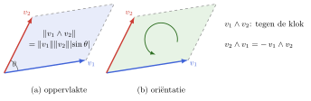

Hoofdstuk 6 - Multilineaire algebra
$$ % Math operators % %
% VECTORS % specifically for vectors in F^n
% MATRICES
% SCALARS
% LINEAR MAPS
% FIELDS
% RELATIONS
$$
Doel van dit hoofdstuk
Bilineaire afbeeldingen zijn lineair in elk argument apart, maar niet lineair op V_1 \times V_2: B(a {v}_1, a {v}_2) = a^2 B({v}_1, {v}_2)
- \Rightarrow nieuwe vectorruimte V_1 \otimes V_2 waarop B wél lineair is: het tensorproduct
- \Rightarrow vectoren, functionalen, lineaire afbeeldingen, bilineaire vormen: allemaal tensoren
- Tensorproduct: definitie en universele eigenschap
- Indexnotatie: contractie en basistransformaties
- Inwendig product op V \otimes W
- Antisymmetrie: wedge product en determinant
Terugblik: H1, H2 en H5
Terugblik: constructies uit H1 en H2
- Vrije vectorruimte {\mathbb{F}}S: formele lineaire combinaties van de elementen van S
- elk element van S is een basisvector, ook als S zelf een vectorruimte is
- Quotiëntruimte V / W: equivalentieklassen {v}+ W
- elementen die verschillen met een element van W worden gelijk
- Permutaties \sigma \in S_n met \mathop{\mathrm{sgn}}(\sigma) = (-1)^{P(\sigma)}
- Leibniz: \det({\mathsf{A}}) = \sum_{\sigma \in S_n} \mathop{\mathrm{sgn}}(\sigma) A^1_{\ \sigma(1)} \cdots A^n_{\ \sigma(n)}
- Directe som V \oplus W: \mathop{\mathrm{dim}}(V \oplus W) = \mathop{\mathrm{dim}}V + \mathop{\mathrm{dim}}W
Terugblik: duale ruimte en basistransformaties
- Duale ruimte V^\ast = \mathop{\mathrm{Hom}}(V, {\mathbb{F}}), duale basis {\varepsilon}^i[{e}_j] = \delta^i_{\ j}
- \xi = \xi_i {\varepsilon}^i met \xi_i = \xi[{e}_i], \xi[{v}] = \xi_i v^i
- Lineaire afbeelding: {\hat{A}} {e}_j = A^i_{\ j} {f}_i, A^i_{\ j} = \varphi^i[{\hat{A}} {e}_j]
- Basistransformatie: vectoren en duale vectoren transformeren tegengesteld
- \tilde{v}^i = [{\mathsf{T}}]^i_{\ j} v^j, \tilde{\xi}_i = [{\mathsf{T}}^{-{\mathsf{T}}}]_i^{\ j} \xi_j
- index boven: contravariant; index onder: covariant
- Bilineaire vorm: B({v}, {w}) = v^i B_{ij} w^j, twee onderindices
Terugblik: inwendig product uit H5
- Metriek g_{ij} = {\left\langle{e}_i,{e}_j\right\rangle}, inverse g^{ij} = ({\mathsf{g}}^{-1})^{ij}
- indices verlagen en verhogen: v_j = \overline{v^i} g_{ij}, v^j = \overline{v_i g^{ij}}
- Orthonormale basis: g_{ij} = \delta_{ij}
- Hilbertruimte: metrisch compleet
- separabel en oneindig-dimensionaal: aftelbare orthonormale basis, V \cong \ell^2
- vb.: Fourierreeks in L^2([0, L])
Tensorproduct van vectorruimten
Bilineaire afbeeldingen, opnieuw
V_1, V_2 eindig-dimensionaal met basissen \{{e}_1, \ldots, {e}_{n_1}\} en \{{f}_1, \ldots, {f}_{n_2}\}
. . .
- Bilineaire vorm B : V_1 \times V_2 \to {\mathbb{F}}: bepaald door B({e}_i, {f}_j) = B_{ij}, een (n_1 \times n_2)-matrix {\mathsf{B}}
- bilineaire vormen vormen een vectorruimte, van dimensie n_1 n_2
- vgl. de duale ruimte V^\ast = \mathop{\mathrm{Hom}}(V, {\mathbb{F}}), met \mathop{\mathrm{dim}}V^\ast = \mathop{\mathrm{dim}}V
- Vraag: zijn de bilineaire vormen op V_1 \times V_2 precies de functionalen W^\ast op een nieuwe vectorruimte W, met \mathop{\mathrm{dim}}W = n_1 n_2?
. . .
- Niet de directe som V_1 \oplus V_2:
- \mathop{\mathrm{dim}}(V_1 \oplus V_2) = n_1 + n_2
- a({v}_1, {v}_2) = (a {v}_1, a {v}_2), maar B(a {v}_1, a {v}_2) = a^2 B({v}_1, {v}_2): B is niet lineair op V_1 \oplus V_2
Een andere vectorruimtestructuur
Bilineair: B(a {v}_1, {v}_2) = B({v}_1, a {v}_2) = a B({v}_1, {v}_2), en zo ook voor sommen
- Identificeer daarom a({v}_1, {v}_2) \sim (a {v}_1, {v}_2) \sim ({v}_1, a {v}_2) ({v}_1 + {v}'_1, {v}_2) \sim ({v}_1, {v}_2) + ({v}'_1, {v}_2), \qquad ({v}_1, {v}_2 + {v}'_2) \sim ({v}_1, {v}_2) + ({v}_1, {v}'_2)
- Met {v}_1 = v_1^i {e}_i en {v}_2 = v_2^j {f}_j volgt ({v}_1, {v}_2) \sim v_1^i v_2^j ({e}_i, {f}_j)
- de koppels ({e}_i, {f}_j) werken als basis: we noteren ze {e}_i \otimes {f}_j
- n_1 n_2 basisvectoren: precies de gezochte dimensie
Tensorproduct: definitie
Definitie 6.0 (Tensorproduct). Het tensorproduct van V_1 en V_2 is de vectorruimte \boxed{V_1 \otimes V_2 = {\mathbb{F}}\{{e}_i \otimes {f}_j \mid i = 1, \ldots, n_1;\ j = 1, \ldots, n_2\}} met \mathop{\mathrm{dim}}(V_1 \otimes V_2) = n_1 n_2
- Vectorruimte: elementen T = T^{ij} {e}_i \otimes {f}_j a T + S = (a T^{ij} + S^{ij}) {e}_i \otimes {f}_j
- Product \otimes : V_1 \times V_2 \to V_1 \otimes V_2, {v}_1 \otimes {v}_2 = v_1^i v_2^j {e}_i \otimes {f}_j, “rekent” als een product: (a {v}_1) \otimes {v}_2 = {v}_1 \otimes (a {v}_2) = a ({v}_1 \otimes {v}_2) \begin{aligned} ({v}_1 + {v}'_1) \otimes {v}_2 &= {v}_1 \otimes {v}_2 + {v}'_1 \otimes {v}_2 \\ {v}_1 \otimes ({v}_2 + {v}'_2) &= {v}_1 \otimes {v}_2 + {v}_1 \otimes {v}'_2 \end{aligned}
Tensoren
Geen één-op-één verband tussen V_1 \times V_2 en V_1 \otimes V_2:
- Elk koppel ({v}_1, {v}_2) geeft een product {v}_1 \otimes {v}_2
- Maar V_1 \otimes V_2 bevat ook sommen van zulke producten: T = T^{ij} {e}_i \otimes {f}_j
- zulke elementen heten tensoren: twee bovenindices (contravariant)
- coëfficiënten in een matrix {\mathsf{T}} = [T^{ij}]
- niet elke tensor is van de vorm {v}_1 \otimes {v}_2
- Outer product: T^{ij} = v_1^i v_2^j, of {\mathsf{T}} = \boldsymbol{v}_1 \boldsymbol{v}_2^{\mathsf{T}}
Terug naar bilineaire afbeeldingen
- Bilineaire vorm B \leftrightarrow functionaal \beta \in (V_1 \otimes V_2)^\ast met \beta[{v}_1 \otimes {v}_2] = B({v}_1, {v}_2)
- lineair uitgebreid naar elke tensor: \boxed{\beta[T^{ij} {e}_i \otimes {f}_j] = T^{ij} \beta[{e}_i \otimes {f}_j] = T^{ij} B_{ij}}
- volledig bepaald door \beta[{e}_i \otimes {f}_j] = B({e}_i, {f}_j) = B_{ij}
- Algemener: bilineaire \psi : V_1 \times V_2 \to V_3 geeft een unieke lineaire {\hat{\psi}} : V_1 \otimes V_2 \to V_3 met \psi({v}_1, {v}_2) = {\hat{\psi}}({v}_1 \otimes {v}_2)
- dit is de universele eigenschap van het tensorproduct
- formele definitie: zonder te verwijzen naar een basis
Universele eigenschap
Wat het tensorproduct moet doen, zonder naar een basis te verwijzen:
Definitie 6.2. Het tensorproduct van V_1 en V_2 is een paar (W, \chi), met W een vectorruimte en \chi : V_1 \times V_2 \to W bilineair, zodat elke bilineaire \psi : V_1 \times V_2 \to V_3 een unieke ontbinding heeft \boxed{\psi = {\hat{\psi}} \circ \chi, \quad {\hat{\psi}} \in \mathop{\mathrm{Hom}}(W, V_3)}

Met Def 6.0: W = V_1 \otimes V_2 en \chi({v}_1, {v}_2) = {v}_1 \otimes {v}_2; {\hat{\psi}} ligt vast door {\hat{\psi}}({e}_i \otimes {f}_j) = \psi({e}_i, {f}_j)
Uniciteit
Propositie 6.1. Voldoen (W, \chi) en (W', \chi') beide, dan bestaat er een isomorfisme {\hat{\phi}} \in \mathop{\mathrm{Hom}}(W, W') met \chi' = {\hat{\phi}} \circ \chi, dus W \cong W'
- Bewijs: de universele eigenschap twee keer toepassen
- \chi' is bilineair, dus \chi' = {\hat{\phi}} \circ \chi voor een lineaire {\hat{\phi}} : W \to W'
- omgekeerd \chi = {\hat{\phi}}' \circ \chi', en dan volgt {\hat{\phi}}' = {\hat{\phi}}^{-1}
- Gevolg: Def 6.0 hangt niet af van de basis
- andere basissen: dezelfde universele eigenschap, dus een isomorfe ruimte
- Het tensorproduct is dus “het” tensorproduct, op isomorfisme na
Universele eigenschap: toepassing
Opmerking 6.2. V_1 \otimes V_2 \cong V_2 \otimes V_1: universele eigenschap op ({v}_1, {v}_2) \mapsto {v}_2 \otimes {v}_1, en omgekeerd
Opmerking 6.3. In een basis: T^{ij} {e}_i \otimes {f}_j \mapsto T^{ij} {f}_j \otimes {e}_i = ({\mathsf{T}}^{\mathsf{T}})^{ji} {f}_j \otimes {e}_i: de getransponeerde
- Verschillende ruimten, wel isomorf
Bestaan: formele definitie
Vraag: kunnen we zo’n ruimte construeren zonder naar een basis te verwijzen?
Definitie 6.1 (Tensorproduct). Voor vectorruimten V_1, V_2 over {\mathbb{F}} is de tensorproductruimte \boxed{V_1 \otimes V_2 = {\mathbb{F}}(V_1 \times V_2) / {\mathbb{F}}(S_1 \cup S_2)} met \begin{aligned} S_1 &= \{(a {v}_1 + b {w}_1, {v}_2) - a({v}_1, {v}_2) - b({w}_1, {v}_2)\} \\ S_2 &= \{({v}_1, a {v}_2 + b {w}_2) - a({v}_1, {v}_2) - b({v}_1, {w}_2)\} \end{aligned} voor alle a, b \in {\mathbb{F}}, {v}_1, {w}_1 \in V_1, {v}_2, {w}_2 \in V_2.
Formele definitie: het idee
Opmerking 6.1. De equivalentieklasse van ({v}_1, {v}_2) noteren we {v}_1 \otimes {v}_2.
- Elk element van V_1 \otimes V_2 is een eindige som \sum_{i=1}^n {v}_1^{(i)} \otimes {v}_2^{(i)}
- Deze ontbinding is niet uniek
Begin zonder enig verband, en leg precies de bilineariteit op, en niets meer:
- {\mathbb{F}}(V_1 \times V_2): vrije vectorruimte, elk koppel ({v}_1, {v}_2) is een basisvector
- overaftelbare basis, al voor V_1 = V_2 = {\mathbb{F}}^1
- geen enkel verband tussen (a {v}_1, {v}_2), ({v}_1, a {v}_2) en a({v}_1, {v}_2)
- Quotiënt met {\mathbb{F}}(S_1 \cup S_2): elementen van S_1 \cup S_2 worden de nulvector \begin{aligned} (a {v}_1 + b {w}_1) \otimes {v}_2 &= a\, {v}_1 \otimes {v}_2 + b\, {w}_1 \otimes {v}_2 \\ {v}_1 \otimes (a {v}_2 + b {w}_2) &= a\, {v}_1 \otimes {v}_2 + b\, {v}_1 \otimes {w}_2 \end{aligned}
Def 6.1: S_1 = \{(a {v}_1 + b {w}_1, {v}_2) - a({v}_1, {v}_2) - b({w}_1, {v}_2)\}, S_2 = \{({v}_1, a {v}_2 + b {w}_2) - a({v}_1, {v}_2) - b({v}_1, {w}_2)\}
Formele definitie: universele eigenschap
Def 6.1 voldoet aan Def 6.2, met \chi({v}_1, {v}_2) = {v}_1 \otimes {v}_2. Gegeven \psi : V_1 \times V_2 \to V_3 bilineair:
- Lineair uitbreiden: de koppels zijn een basis van {\mathbb{F}}(V_1 \times V_2); met {x}_k \in V_1, {y}_k \in V_2: {\hat{\Psi}}\Big(\sum_k a_k ({x}_k, {y}_k)\Big) = \sum_k a_k \psi({x}_k, {y}_k) \in V_3
- Nul op de relaties, want \psi is bilineair: \begin{aligned} &{\hat{\Psi}}\big((a {v}_1 + b {w}_1, {v}_2) - a({v}_1, {v}_2) - b({w}_1, {v}_2)\big) \\ &\quad = \psi(a {v}_1 + b {w}_1, {v}_2) - a \psi({v}_1, {v}_2) - b \psi({w}_1, {v}_2) = {o} \end{aligned} idem voor S_2, dus {\mathbb{F}}(S_1 \cup S_2) \subseteq \mathop{\mathrm{ker}}({\hat{\Psi}})
- Naar het quotiënt: {\hat{\Psi}} is constant op elke equivalentieklasse {\hat{\psi}}({v}_1 \otimes {v}_2) = \psi({v}_1, {v}_2), \qquad \text{dus } \psi = {\hat{\psi}} \circ \chi
- Uniek: de {v}_1 \otimes {v}_2 spannen V_1 \otimes V_2 op (Opm 6.1)
Tensorproduct van lineaire afbeeldingen
Definitie 6.3. Voor {\hat{A}}_1 \in \mathop{\mathrm{Hom}}(V_1, W_1) en {\hat{A}}_2 \in \mathop{\mathrm{Hom}}(V_2, W_2) is {\hat{A}}_1 \otimes {\hat{A}}_2 \in \mathop{\mathrm{Hom}}(V_1 \otimes V_2, W_1 \otimes W_2) de lineaire afbeelding die via de universele eigenschap hoort bij de bilineaire afbeelding ({v}_1, {v}_2) \mapsto ({\hat{A}}_1 {v}_1) \otimes ({\hat{A}}_2 {v}_2)
- Basissen \{{e}_k\} \subset V_1, \{{f}_l\} \subset V_2, \{{g}_i\} \subset W_1, \{{h}_j\} \subset W_2; op de productbasis: ({\hat{A}}_1 \otimes {\hat{A}}_2)({e}_k \otimes {f}_l) = ({\hat{A}}_1 {e}_k) \otimes ({\hat{A}}_2 {f}_l) = (A_1)^i_{\ k} (A_2)^j_{\ l}\, {g}_i \otimes {h}_j
- Tensor als vector: T^{kl} = T^K met K = (k-1) n_2 + l (matrix “afvlakken”)
- Matrixvoorstelling van {\hat{A}} = {\hat{A}}_1 \otimes {\hat{A}}_2, van grootte m_1 m_2 \times n_1 n_2: \boxed{({\mathsf{A}})^I_{\ K} = A^{(i,j)}_{\ \ (k,l)} = ({\mathsf{A}}_1)^i_{\ k} ({\mathsf{A}}_2)^j_{\ l}} I = (i-1) m_2 + j, \quad K = (k-1) n_2 + l, \qquad n_i = \mathop{\mathrm{dim}}V_i, \quad m_i = \mathop{\mathrm{dim}}W_i
Kronecker product
Opmerking 6.4. Voor matrices: Kronecker product of (matrix) direct product, in blokvorm {\mathsf{A}}_1 \otimes {\mathsf{A}}_2 = \begin{bmatrix} ({\mathsf{A}}_1)^1_{\ 1} {\mathsf{A}}_2 & ({\mathsf{A}}_1)^1_{\ 2} {\mathsf{A}}_2 & \cdots & ({\mathsf{A}}_1)^1_{\ n_1} {\mathsf{A}}_2 \\ ({\mathsf{A}}_1)^2_{\ 1} {\mathsf{A}}_2 & ({\mathsf{A}}_1)^2_{\ 2} {\mathsf{A}}_2 & \cdots & ({\mathsf{A}}_1)^2_{\ n_1} {\mathsf{A}}_2 \\ \vdots & \vdots & \ddots & \vdots \\ ({\mathsf{A}}_1)^{m_1}_{\ 1} {\mathsf{A}}_2 & ({\mathsf{A}}_1)^{m_1}_{\ 2} {\mathsf{A}}_2 & \cdots & ({\mathsf{A}}_1)^{m_1}_{\ n_1} {\mathsf{A}}_2 \end{bmatrix}
Opmerking 6.5. In Python (NumPy), MATLAB en Julia: kron
Voorbeeld. \begin{bmatrix} 1 & 2 \\ 3 & 4 \end{bmatrix} \otimes \begin{bmatrix} 0 & 1 \\ 1 & 0 \end{bmatrix} = \begin{bmatrix} 0 & 1 & 0 & 2 \\ 1 & 0 & 2 & 0 \\ 0 & 3 & 0 & 4 \\ 3 & 0 & 4 & 0 \end{bmatrix}
Multilineaire afbeeldingen
- Multilineaire afbeelding M : V_1 \times \cdots \times V_N \to W: lineair in elk argument apart
- coëfficiënten M^i_{\ j_1 j_2 \ldots j_N}; N-vorm: V^{\times N} \to {\mathbb{F}} (vgl. 1-vorm = functionaal)
- Verwacht, zoals bij bilineair: M \leftrightarrow {\hat{M}} \in \mathop{\mathrm{Hom}}(V_1 \otimes \cdots \otimes V_N, W)
- maar wat is een tensorproduct van meer dan twee ruimten?
Propositie 6.2. (U \otimes V) \otimes W en U \otimes (V \otimes W) zijn isomorf
Opmerking 6.6. In de praktijk: tensorproduct associatief, we schrijven U \otimes V \otimes W
Opmerking 6.7. Eindig-dimensionaal, met basissen \{{e}_i\}, \{{f}_j\}, \{{g}_k\} van U, V, W: T = T^{ijk}\, {e}_i \otimes {f}_j \otimes {g}_k \in U \otimes V \otimes W
Orde van een tensor
Definitie 6.4. Een tensor T \in V_1 \otimes \cdots \otimes V_N heeft coëfficiënten T^{i_1 i_2 \ldots i_N} met N indices: de orde, graad, rang of dimensionaliteit van de tensor
Opmerking 6.9. Programmeertalen: multidimensionale array; aantal indices ndim (NumPy), ndims (Julia, MATLAB)
- Scalairen: {\mathbb{F}}\times V \to V : (a, {v}) \mapsto a {v} is bilineair
- via de universele eigenschap: lineaire, bijectieve {\hat{L}} : {\mathbb{F}}\otimes V \to V, a \otimes {v}\mapsto a {v}
- dus {\mathbb{F}}\otimes V \cong V: we schrijven {\mathbb{F}}\otimes V = V
- op een computer niet onzichtbaar: een index van dimensie 1 verandert de orde
Lineaire afbeelding als bilineaire vorm
{\hat{A}} \in \mathop{\mathrm{Hom}}(V, W); basissen \{{e}_j\} van V en \{{f}_i\} van W, duale basissen \{{\varepsilon}^j\} en \{\varphi^i\}
- Met inwendig product (H5): sesquilineaire vorm ({w}, {v}) \mapsto {\left\langle{w},{\hat{A}} {v}\right\rangle} op W \times V
- Zonder inwendig product: een bilineaire vorm op W^\ast \times V \boxed{A(\xi, {v}) = \xi[{\hat{A}} {v}]}
- via de universele eigenschap: lineaire functionaal \xi \otimes {v}\mapsto \xi[{\hat{A}} {v}] op W^\ast \otimes V
- een element van \mathop{\mathrm{Hom}}(W^\ast \otimes V, {\mathbb{F}}) = (W^\ast \otimes V)^\ast
- coëfficiënten: A(\varphi^i, {e}_j) = \varphi^i[{\hat{A}} {e}_j] = A^i_{\ j}
- dezelfde getallen als in de matrix van {\hat{A}}: {\hat{A}} {e}_j = A^i_{\ j} {f}_i
Lineaire afbeelding als tensor
- Met dezelfde coëfficiënten: {\hat{A}} \cong A^i_{\ j} {f}_i \otimes {\varepsilon}^j \in W \otimes V^\ast
- Werking: de V^\ast-factor “eet” de vector (contractie) ({f}_i \otimes {\varepsilon}^j)({v}) = {f}_i\, {\varepsilon}^j[{v}] = v^j {f}_i \qquad \Rightarrow \qquad (A^i_{\ j} {f}_i \otimes {\varepsilon}^j)({v}) = A^i_{\ j} v^j {f}_i = {\hat{A}} {v}
- Rang 1: {w}\otimes \xi werkt als {v}\mapsto {w}\, \xi[{v}]; matrix \boldsymbol{w} \boldsymbol{\xi}^{\mathsf{T}} (outer product)
\boxed{\mathop{\mathrm{Hom}}(V, W) \cong \mathop{\mathrm{Hom}}(W^\ast \otimes V, {\mathbb{F}}) \cong \mathop{\mathrm{Hom}}({\mathbb{F}}, W \otimes V^\ast) \cong W \otimes V^\ast}
- Afbeelding, bilineaire vorm, tensor: dezelfde coëfficiënten A^i_{\ j}
Identiteit, natuurlijke paring en trace
V = W: \mathop{\mathrm{Hom}}(V, V) \cong V \otimes V^\ast \cong \mathop{\mathrm{Hom}}(V^\ast \otimes V, {\mathbb{F}})
- Identiteit: {\hat{1}}_V \cong \delta^i_{\ j} {e}_i \otimes {\varepsilon}^j = {e}_i \otimes {\varepsilon}^i (in elke basis hetzelfde element)
- Als functionaal op V^\ast \otimes V: de natuurlijke paring of evaluatie \boxed{{\varepsilon}^i \otimes {e}_j \mapsto {\varepsilon}^i[{e}_j] = \delta^i_{\ j}, \qquad \xi \otimes {v}\mapsto \xi[{v}]}
- gebruikt geen basis en geen inwendig product
- Trace: de paring toegepast op {\hat{A}} \in V \otimes V^\ast: \mathop{\mathrm{tr}}{\hat{A}} = A^i_{\ j} \delta^j_{\ i} = A^i_{\ i}
- Samenstellen: ({\hat{A}} {\hat{B}})^i_{\ k} = A^i_{\ j} B^j_{\ k}: de paring van de middelste factoren
Bra-ketnotatie
Kwantummechanica, Hilbertruimte \mathcal{H}: de Dirac-notatie maakt deze constructies zichtbaar
| wiskunde | bra-ket | |
|---|---|---|
| vector | {v}\in \mathcal{H} | \lvert v \rangle (ket) |
| functionaal | \xi \in \mathcal{H}^\ast | \langle \xi \rvert (bra) |
| natuurlijke paring | \xi[{v}] | \langle \xi \vert v \rangle |
| tensor in \mathcal{H} \otimes \mathcal{H}^\ast | {w}\otimes \xi | \lvert w \rangle \langle \xi \rvert |
| werking: contractie | {w}\, \xi[{v}] | \lvert w \rangle \langle \xi \vert v \rangle |
| bilineaire vorm (matrixelement) | \xi[{\hat{A}} {v}] | \langle \xi \vert {\hat{A}} \vert v \rangle |
- Riesz (5.27): elke bra is \langle v \rvert = {\left\langle{v},\cdot\right\rangle}, antilineair in {v}; zo wordt \langle w \vert v \rangle = {\left\langle{w},{v}\right\rangle}
- Een bra naast een ket sluit het haakje: contractie, een getal
Indexnotatie
- Algemeen, met associativiteit en V_1 \otimes V_2 \cong V_2 \otimes V_1: \begin{aligned}
V_1 \otimes \cdots \otimes V_N &\cong \mathop{\mathrm{Hom}}(V_1^\ast \otimes \cdots \otimes V_N^\ast, {\mathbb{F}}) \\
&\cong \mathop{\mathrm{Hom}}(V_{\sigma_1}^\ast \otimes \cdots \otimes V_{\sigma_k}^\ast, V_{\sigma_{k+1}} \otimes \cdots \otimes V_{\sigma_N})
\end{aligned}
- één tensor, veel interpretaties als multilineaire afbeelding
- Vaak één primaire ruimte V (ruimte, ruimtetijd, raakruimte): factoren V en V^\ast
- index boven voor V (contravariant), onder voor V^\ast (covariant)
- vb. T \in V \otimes V^\ast \otimes V^\ast \otimes V: coëfficiënten T^{i\ \ \ l}_{\ jk}
- (Abstracte) indexnotatie: indices als plaatshouders, niet als getallen
Tensoroperaties
T^{i\ \ \ l}_{\ jk} \in V \otimes V^\ast \otimes V^\ast \otimes V en S_i^{\ jk} \in V^\ast \otimes V \otimes V:
- Indexpermutatie: indices herschikken, met behoud van boven/onder U_{j\ \ k}^{\ l\ \ i} = T^{i\ \ \ l}_{\ jk} \quad \text{(orde 2: transponeren)}
- Tensorproduct (outer product): U^{i\ \ \ l\ \ np}_{\ jk\ m} = T^{i\ \ \ l}_{\ jk} S_m^{\ np}
- Contractie: een boven- en een onderindex gelijkstellen en sommeren (natuurlijke paring)
- binnen één tensor (veralgemeende trace): V^i_{\ j} = T^{i\ \ \ k}_{\ jk}
- tussen tensoren: W^{i\ n}_{\ j} = T^{i\ \ \ l}_{\ jk} S_l^{\ nk}
- oorsprong van Einsteins sommatieconventie
Tensordiagrammen
Grafische indexnotatie (Penrose; niet in de cursus): elke index is een beentje
- beentje omlaag: index boven (V); beentje omhoog: index onder (V^\ast)
- beentjes verbinden = contractie (boven met onder); invoer boven, uitvoer onder

Basistransformaties van tensoren
Basis \{{e}_i\} \to \{\tilde{{e}}_i\} met {e}_j = \tilde{{e}}_i L^i_{\ j}:
- vector: \tilde{v}^i = L^i_{\ j} v^j; duale vector: \tilde{\chi}_i = ({\mathsf{L}}^{-1})^j_{\ i} \chi_j
- tensor: elke index transformeert volgens zijn positie \boxed{\tilde{T}^{i\ \ \ l}_{\ jk} = ({\mathsf{L}})^i_{\ i'} ({\mathsf{L}}^{-1})^{j'}_{\ j} ({\mathsf{L}}^{-1})^{k'}_{\ k} ({\mathsf{L}})^l_{\ l'} T^{i'\ \ \ \ l'}_{\ j'k'}}
- contractie van een boven- met een onderindex: basisonafhankelijk
- vb. \xi[{v}] = \xi_i v^i, trace A^i_{\ i}
Tensoren in inwendig productruimten
Inwendig product op een tensorproduct
Basissen \{{e}_i\} van V, \{{f}_j\} van W; metrieken g_{ik} = {\left\langle{e}_i,{e}_k\right\rangle}_V, h_{jl} = {\left\langle{f}_j,{f}_l\right\rangle}_W
- Intuïtief: metriek op V \otimes W: {\left\langle{e}_i \otimes {f}_j,{e}_k \otimes {f}_l\right\rangle} = g_{ik} h_{jl}, dus {\left\langle S,T\right\rangle}_{V \otimes W} = \overline{S^{ij}} g_{ik} h_{jl} T^{kl}
- metriek {\mathsf{g}} \otimes {\mathsf{h}} (Kronecker): positief definiet, eigenwaarden \lambda_i \mu_j > 0
- Orthonormale basissen: g_{ik} = \delta_{ik}, h_{jl} = \delta_{jl} {\left\langle S,T\right\rangle}_{V \otimes W} = \sum_{i,j} \overline{S^{ij}} T^{ij}, \qquad {\left\lVert T\right\rVert}^2 = \sum_{i,j} {\left\lvert T^{ij}\right\rvert}^2
- {\left\lVert T\right\rVert} is de Hilbert-Schmidt-norm van {\mathsf{T}} (H5)
- Op producttensoren, zonder basis: \boxed{{\left\langle{v}\otimes {w},{v}' \otimes {w}'\right\rangle}_{V \otimes W} = {\left\langle{v},{v}'\right\rangle}_V {\left\langle{w},{w}'\right\rangle}_W}
Inwendig product: zonder basis
Zoals Def 6.1 voor Def 6.0: dezelfde definitie, zonder naar een basis te verwijzen
- Definieer {\left\langle({v}, {w}),({v}', {w}')\right\rangle} = {\left\langle{v},{v}'\right\rangle}_V {\left\langle{w},{w}'\right\rangle}_W op {\mathbb{F}}(V \times W), (anti)lineair uitgebreid
- ontaard: de nulruimte is precies {\mathbb{F}}(S_1 \cup S_2) \to welgedefinieerd op het quotiënt V \otimes W
- Positief definiet: T = \sum_{i=1}^n {v}_i \otimes {w}_i; Gram-Schmidt geeft orthonormale \{{e}_k\}, \{{f}_k\}: {\left\langle T,T\right\rangle} = \sum_{i,j,k,l} \overline{T^{ij}} T^{kl} {\left\langle{e}_i,{e}_k\right\rangle} {\left\langle{f}_j,{f}_l\right\rangle} = \sum_{i,j} {\left\lvert T^{ij}\right\rvert}^2 > 0
- dat is de intuïtieve formule, met orthonormale stelsels die van T afhangen
- werkt ook in oneindige dimensie: elke T is een eindige som
- Gevolg: de intuïtieve formule hangt niet af van de gekozen orthonormale basissen
Indices verhogen en verlagen
Reële V, eindig-dimensionaal, metriek {\mathsf{g}} (niet noodzakelijk orthonormaal):
- v_i = g_{ij} v^j, v^i = g^{ij} v_j: elke index van een tensor kan omhoog of omlaag
- vb. T^{ij}_{\ \ kl} = g^{jj'} g_{ll'} T^{i\ \ \ \ l'}_{\ j'k}, met hetzelfde symbool
- Inwendig product door contractie: {\left\langle T,\tilde{T}\right\rangle} = T^{i\ \ \ l}_{\ jk} \tilde{T}^{i'\ \ \ \ l'}_{\ j'k'} g_{ii'} g^{jj'} g^{kk'} g_{ll'} = T_{ijkl} \tilde{T}^{ijkl}
- Lineaire afbeelding A^i_{\ j} \leftrightarrow bilineaire vorm A_{ij} = g_{ik} A^k_{\ j} (H5)
- Orthonormale basis, g_{ij} = \delta_{ij}: verhogen en verlagen verandert niets
- Cartesische tensoren: enkel onderindices; basistransformaties zijn orthogonaal
Tensorproduct van Hilbertruimten
- V \otimes W bevat enkel eindige sommen \sum_{i=1}^n {v}_i \otimes {w}_i: niet compleet
- Cauchy-rijen T^{(k)} = \sum_{i=1}^{n_k} {v}_i^{(k)} \otimes {w}_i^{(k)} met een limiet die geen eindige som is
- Definitie voor Hilbertruimten: de completering \boxed{V \otimes W = \overline{{\mathbb{F}}(V \times W) / {\mathbb{F}}(S_1 \cup S_2)}}
- orthonormale basissen \{{e}_m\}, \{{f}_n\} \Rightarrow orthonormale basis \{{e}_m \otimes {f}_n \mid m, n \in {\mathbb{N}}\}
Opmerking 6.10. Zonder norm kan dit niet: functies op {\mathbb{R}}^2 zijn geen eindige sommen g(x) h(y), en er is geen limiet
Opmerking 6.11. Kwantummechanica, samengesteld systeem: \mathcal{H}_{AB} = \mathcal{H}_A \otimes \mathcal{H}_B
Voorbeeld: functies van twee variabelen
Voorbeeld 6.1. V = L^2([0, L_x]) (functies g(x)), W = L^2([0, L_y]) (functies h(y))
- Product: g \otimes h is de functie f(x, y) = g(x) h(y) op de rechthoek R = [0, L_x] \times [0, L_y]
- kwadratisch integreerbaar, en het inwendig product klopt: \iint_R \overline{g(x) h(y)}\, g'(x) h'(y)\, {\mathrm{d}}x\, {\mathrm{d}}y = {\left\langle g,g'\right\rangle} {\left\langle h,h'\right\rangle} = {\left\langle g \otimes h,g' \otimes h'\right\rangle}
- Algebraïsch V \otimes W: eindige sommen \sum_{k=1}^n g_k(x) h_k(y)
- vgl. matrices: een “matrix” f(x, y) van eindige rang
- niet alle functies: {\mathrm{e}}^{-(x-y)^2} = \sum_{n=0}^\infty \frac{2^n}{n!} (x^n {\mathrm{e}}^{-x^2})(y^n {\mathrm{e}}^{-y^2}) vraagt oneindig veel termen
- Hilbert V \otimes W (completering): alle limieten van zulke sommen \boxed{L^2([0, L_x]) \otimes L^2([0, L_y]) = L^2([0, L_x] \times [0, L_y])}
Voorbeeld 6.1: Fourierbasis
- Orthonormale basissen (H5): e_k(x) = \frac{1}{\sqrt{L_x}} {\mathrm{e}}^{{\mathrm{i}}2\pi k x / L_x}, f_l(y) = \frac{1}{\sqrt{L_y}} {\mathrm{e}}^{{\mathrm{i}}2\pi l y / L_y}, k, l \in {\mathbb{Z}}
- Basis van het tensorproduct: e_k \otimes f_l, de tweedimensionale Fourierfuncties (e_k \otimes f_l)(x, y) = \frac{1}{\sqrt{L_x L_y}} {\mathrm{e}}^{{\mathrm{i}}2\pi (k x / L_x + l y / L_y)}
- Expansie (Stelling 5.23): elke f \in L^2(R) is f = \sum_{k,l=-\infty}^{+\infty} F_{kl}\, e_k \otimes f_l, \qquad F_{kl} = {\left\langle e_k \otimes f_l,f\right\rangle}
- gelijkheid in de 2-norm; \sum_{k,l} {\left\lvert F_{kl}\right\rvert}^2 = {\left\lVert f\right\rVert}^2: een “oneindige matrix” F_{kl}
- Afgeknot tot {\left\lvert k\right\rvert}, {\left\lvert l\right\rvert} \leq N: een eindige som van producten \to die zijn dicht in L^2(R)
Tensoralgebra en exterieure producten
Tensoren van type (p, q)
Eén primaire ruimte V: V^{\otimes k} = V \otimes \cdots \otimes V (k keer), V^{\otimes 0} = {\mathbb{F}}
- Algemeen, factoren herschikt: \boxed{\mathcal{T}^p_{\ q}(V) = V^{\otimes p} \otimes (V^\ast)^{\otimes q}}
- contravariante graad p, covariante graad q
- vector (1, 0), duale vector (0, 1), lineaire afbeelding (1, 1), bilineaire vorm (0, 2)
- (p, q)-tensor \leftrightarrow multilineaire vorm op (V^\ast)^{\times p} \times V^{\times q}
Opmerking 6.12. In een basis: t^{i_1 \ldots i_p}_{\qquad j_1 \ldots j_q}\, {e}_{i_1} \otimes \cdots \otimes {e}_{i_p} \otimes {\varepsilon}^{j_1} \otimes \cdots \otimes {\varepsilon}^{j_q}
Opmerking 6.13. \mathcal{T}^p_{\ q}(V)^\ast \cong \mathcal{T}^p_{\ q}(V^\ast) \cong \mathcal{T}^q_{\ p}(V): volledige contractie geeft een scalair
Tensoralgebra
- \otimes : V^{\otimes k} \times V^{\otimes l} \to V^{\otimes (k+l)}: bilineair, associatief, 1 \otimes T = T voor 1 \in {\mathbb{F}}
- maar geen product binnen één ruimte
- Tensoralgebra: directe som van alle graden \boxed{\mathcal{T}(V) = \bigoplus_{k=0}^{+\infty} V^{\otimes k} = {\mathbb{F}}\oplus V \oplus V^{\otimes 2} \oplus \cdots}
- \otimes maakt \mathcal{T}(V) tot een associatieve algebra met eenheid 1 \in {\mathbb{F}}= V^{\otimes 0}
- elementen t_{(0)} + t_{(1)}^i {e}_i + t_{(2)}^{ij} {e}_i \otimes {e}_j + \cdots (formele som)
- homogeen element: in één V^{\otimes k}
Opmerking 6.14. Een ruimte die zo ontbindt in componenten met een (gehele) index heet een graded vector space
Symmetrie onder indexpermutatie
- V \otimes W \cong W \otimes V, maar \otimes is niet commutatief: {v}\otimes {w}\neq {w}\otimes {v}
- Orde 2: symmetrisch en antisymmetrisch deel, zoals bij matrices: {\mathsf{T}} = \underbrace{\frac{{\mathsf{T}} + {\mathsf{T}}^{\mathsf{T}}}{2}}_{\mathcal{S}{\mathsf{T}}} + \underbrace{\frac{{\mathsf{T}} - {\mathsf{T}}^{\mathsf{T}}}{2}}_{\mathcal{A}{\mathsf{T}}}
- Orde p: \sigma \in S_p herschikt de factoren: de factor op plaats m gaat naar plaats \sigma(m) \sigma \triangleright T = T^{i_1 \ldots i_p}\, {e}_{i_{\sigma^{-1}(1)}} \otimes \cdots \otimes {e}_{i_{\sigma^{-1}(p)}}
- in componenten: \boxed{(\sigma \triangleright T)^{j_1 j_2 \ldots j_p} = T^{j_{\sigma(1)} j_{\sigma(2)} \ldots j_{\sigma(p)}}}
- representatie van S_p: \sigma \triangleright (\tau \triangleright T) = (\sigma \circ \tau) \triangleright T
Symmetrie onder indexpermutatie: voorbeeld
p = 3 en de cyclische permutatie \sigma:
| plaats m | 1 | 2 | 3 |
|---|---|---|---|
| \sigma(m) | 2 | 3 | 1 |
- Op een product: {u} gaat van plaats 1 naar 2, {v} van 2 naar 3, {w} van 3 naar 1 \sigma \triangleright ({u}\otimes {v}\otimes {w}) = {w}\otimes {u}\otimes {v}
- In componenten: (\sigma \triangleright T)^{j_1 j_2 j_3} = T^{j_{\sigma(1)} j_{\sigma(2)} j_{\sigma(3)}} = T^{j_2 j_3 j_1}
- controle met T = {u}\otimes {v}\otimes {w}, dus T^{ijk} = u^i v^j w^k: T^{j_2 j_3 j_1} = u^{j_2} v^{j_3} w^{j_1} = w^{j_1} u^{j_2} v^{j_3}: \quad \text{de coëfficiënten van } {w}\otimes {u}\otimes {v}
Symmetrie onder indexpermutatie
Opmerking 6.15. {\hat{G}} \in \mathop{\mathrm{GL}}(V) werkt op V^{\otimes p} als {\hat{G}}^{\otimes p}: \begin{aligned} {\hat{G}}^{\otimes p} T &= T^{i_1 \ldots i_p} ({\hat{G}} {e}_{i_1}) \otimes \cdots \otimes ({\hat{G}} {e}_{i_p}) \\ ({\hat{G}}^{\otimes p} T)^{j_1 \ldots j_p} &= G^{j_1}_{\ i_1} \cdots G^{j_p}_{\ i_p} T^{i_1 \ldots i_p} \end{aligned} een representatie van \mathop{\mathrm{GL}}(V) op V^{\otimes p}
Opmerking 6.16. Beide acties commuteren: \sigma \triangleright ({\hat{G}}^{\otimes p} T) = {\hat{G}}^{\otimes p}(\sigma \triangleright T)
- Deelruimten invariant onder S_p zijn ook invariant onder \mathop{\mathrm{GL}}(V): Schur-Weyl-dualiteit
Antisymmetrische tensoren
Definitie 6.5. De totaal antisymmetrische deelruimte \Lambda^p(V) van V^{\otimes p} bevat de tensoren met \boxed{\sigma \triangleright T = \mathop{\mathrm{sgn}}(\sigma) T \quad \forall \sigma \in S_p}
Opmerking 6.17. \Lambda^0(V) = {\mathbb{F}} en \Lambda^1(V) = V
- Voorbeelden: {v}\otimes {w}- {w}\otimes {v}\in \Lambda^2(V); antisymmetrische matrices {\mathsf{T}}^{\mathsf{T}}= -{\mathsf{T}}
Antisymmetrisatie
Definitie 6.6. Antisymmetrisatie-operator \mathcal{A} \in \mathop{\mathrm{End}}(V^{\otimes p}), een projector met \mathop{\mathrm{im}}(\mathcal{A}) = \Lambda^p(V): \boxed{\mathcal{A} T = \frac{1}{p!} \sum_{\sigma \in S_p} \mathop{\mathrm{sgn}}(\sigma) (\sigma \triangleright T)}
- Vb. p = 2: \mathcal{A}({v}\otimes {w}) = \frac{1}{2}({v}\otimes {w}- {w}\otimes {v}), voor matrices \frac{1}{2}({\mathsf{T}} - {\mathsf{T}}^{\mathsf{T}})
- Eigenschappen: \mathcal{A} T is antisymmetrisch, T \in \Lambda^p(V) \Rightarrow \mathcal{A} T = T, dus \mathcal{A}^2 = \mathcal{A}
- bewijs: \tau \circ \sigma doorloopt S_p (vaste \tau), \mathop{\mathrm{sgn}}(\sigma) = \mathop{\mathrm{sgn}}(\tau) \mathop{\mathrm{sgn}}(\tau \circ \sigma): \tau \triangleright \mathcal{A} T = \frac{1}{p!} \sum_\sigma \mathop{\mathrm{sgn}}(\sigma) (\tau \circ \sigma) \triangleright T = \mathop{\mathrm{sgn}}(\tau) \mathcal{A} T
Opmerking 6.18. Voor elke p een eigen \mathcal{A}; we gebruiken hetzelfde symbool
Wedge product
- \mathcal{A}(T \otimes S) = \mathcal{A}((\mathcal{A} T) \otimes S) = \mathcal{A}(T \otimes (\mathcal{A} S)) \to product direct tussen de \Lambda^p
Definitie 6.7. Het wedge product of exterieur product \wedge : \Lambda^p(V) \times \Lambda^q(V) \to \Lambda^{p+q}(V): \boxed{T \wedge S = \sqrt{\frac{(p+q)!}{p!\, q!}}\, \mathcal{A}(T \otimes S)}
Opmerking 6.19. Bilineair, associatief en alternerend (antisymmetrisch)
Opmerking 6.20. De factor is een conventie (1, \frac{(p+q)!}{p!\, q!} of deze): met deze keuze komt het inwendig product van de tensorruimte overeen met dat van de exterieure algebra
Wedge product van vectoren
\begin{aligned} {v}_1 \wedge {v}_2 &= \frac{1}{\sqrt{2}} ({v}_1 \otimes {v}_2 - {v}_2 \otimes {v}_1) \\ {v}_1 \wedge {v}_2 \wedge {v}_3 &= \frac{1}{\sqrt{6}} ({v}_1 \otimes {v}_2 \otimes {v}_3 - {v}_2 \otimes {v}_1 \otimes {v}_3 + {v}_2 \otimes {v}_3 \otimes {v}_1 \\ &\qquad\quad - {v}_1 \otimes {v}_3 \otimes {v}_2 + {v}_3 \otimes {v}_1 \otimes {v}_2 - {v}_3 \otimes {v}_2 \otimes {v}_1) \end{aligned}
\boxed{{v}_1 \wedge {v}_2 \wedge \cdots \wedge {v}_p = \frac{1}{\sqrt{p!}} \sum_{\sigma \in S_p} \mathop{\mathrm{sgn}}(\sigma)\, {v}_{\sigma(1)} \otimes {v}_{\sigma(2)} \otimes \cdots \otimes {v}_{\sigma(p)}}
- {v}_2 \wedge {v}_1 = -{v}_1 \wedge {v}_2, dus {v}\wedge {v}= 0; lineair afhankelijk \Rightarrow {v}_1 \wedge \cdots \wedge {v}_p = 0
Basis van \Lambda^p(V)
\mathop{\mathrm{dim}}V = n, geordende basis \{{e}_1, \ldots, {e}_n\}: B_{\Lambda^p(V)} = \{{e}_{i_1} \wedge {e}_{i_2} \wedge \cdots \wedge {e}_{i_p} \mid 1 \leq i_1 < i_2 < \cdots < i_p \leq n\}
- \Lambda^0: \{1\}, \Lambda^1: \{{e}_i\}, \Lambda^2: \{{e}_i \wedge {e}_j \mid i < j\}, …, \Lambda^n: \{{e}_1 \wedge \cdots \wedge {e}_n\} \boxed{\mathop{\mathrm{dim}}\Lambda^p(V) = \binom{n}{p} = \frac{n!}{p!(n-p)!}}
- \mathop{\mathrm{dim}}\Lambda^n(V) = 1; p > n: geen niet-nul antisymmetrische tensoren
Opmerking 6.21. Basisonafhankelijke determinant: voor T \in \Lambda^n(V) is {\hat{A}}^{\otimes n} T = \det({\hat{A}}) T, want {\hat{A}}^{\otimes n}({e}_1 \wedge \cdots \wedge {e}_n) = ({\hat{A}} {e}_1) \wedge \cdots \wedge ({\hat{A}} {e}_n) = \det({\hat{A}})\, {e}_1 \wedge \cdots \wedge {e}_n
Leibniz (H2, Def 2.11): \det({\mathsf{A}}) = \sum_{\sigma \in S_n} \mathop{\mathrm{sgn}}(\sigma) A^1_{\ \sigma(1)} A^2_{\ \sigma(2)} \cdots A^n_{\ \sigma(n)}
Wedge product en inwendig product
Propositie 6.3. Voor een inwendig productruimte V en {v}_i, {w}_i \in V: {\left\langle{w}_1 \wedge \cdots \wedge {w}_p,{v}_1 \wedge \cdots \wedge {v}_p\right\rangle} = \det \begin{bmatrix} {\left\langle{w}_1,{v}_1\right\rangle} & \cdots & {\left\langle{w}_1,{v}_p\right\rangle} \\ \vdots & \ddots & \vdots \\ {\left\langle{w}_p,{v}_1\right\rangle} & \cdots & {\left\langle{w}_p,{v}_p\right\rangle} \end{bmatrix}
Voorbeeld 6.2. V = {\mathbb{R}}^n: {\left\lVert\boldsymbol{v}_1 \wedge \boldsymbol{v}_2\right\rVert} = \sqrt{{\left\lVert\boldsymbol{v}_1\right\rVert}^2 {\left\lVert\boldsymbol{v}_2\right\rVert}^2 - {\left\lvert{\left\langle\boldsymbol{v}_1,\boldsymbol{v}_2\right\rangle}\right\rvert}^2} = {\left\lVert\boldsymbol{v}_1\right\rVert} {\left\lVert\boldsymbol{v}_2\right\rVert} {\left\lvert\sin(\theta)\right\rvert} de oppervlakte van het parallellogram opgespannen door \boldsymbol{v}_1 en \boldsymbol{v}_2
Wedge product: volume en oriëntatie
- {\left\lVert{v}_1 \wedge \cdots \wedge {v}_p\right\rVert} = volume van het p-dimensionale parallellepipedum
- basis voor integralen in hogere dimensie (differentiaalmeetkunde)
- Volgorde telt: oriëntatie, het georiënteerde volume
- Orthonormale basis van V \Rightarrow B_{\Lambda^p(V)} is orthonormaal

Exterieure algebra
Definitie 6.8. Voor eindig-dimensionale V is \boxed{\Lambda(V) = \bigoplus_{p=0}^{\mathop{\mathrm{dim}}V} \Lambda^p(V)} met het wedge product een associatieve algebra: de exterieure algebra of Grassmann-algebra. Elementen: multivectoren; homogeen in \Lambda^p(V): p-vectoren.
- \Lambda(V) is een deelruimte van \mathcal{T}(V) met \mathop{\mathrm{dim}}\Lambda(V) = \sum_{p=0}^n \binom{n}{p} = 2^n
- Met inwendig product op V: de \Lambda^p(V) zijn onderling orthogonaal
Opmerking 6.22. Fysica: identiek aan de Fock-ruimte voor fermionische veeldeeltjessystemen